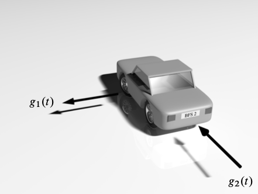

3.8. Example 4 - constant-velocity 2D motion tracking#
Here, we will follow a series of examples taken from [4] for tracking vehicle motion in 2D.

Assume that a car is represented by a point mass at its centre \((x_1, x_2),\) and moves in the \(x_1\)-\(x_2\) plane subject to noisy forces \(g_1(t),\) \(g_2(t).\) Then, according to Newton’s law of motion, \(F=ma,\) we can simply write \(g_i(t)=ma_i(t),\) where \(a_i = \ddot{x_i}.\) Now, since \(g_i(t)\) are badly known, or unknown, we can model \(g_i(t)/m\) as random processes, and more precisely as independent, white noise (Wiener) processes. We thus obtain the 2nd order system
where \(w_i \sim \mathcal{N} ( 0, \sigma^2_{w_{i}} ).\) Defining the velocities, \(x_3 = \dot{x}_1,\) and \(x_4 = \dot{x}_2,\) we can write this as a first order system,
where
More generally, we can consider a \(d\)-dimensional (\(d=1,2,3),\) continuous-time, constant-velocity model for the motion of an object in space,
which just denotes that the derivaitve of the position is the velocity, and that the derivative of the velocity is the process noise. We can now proceed to discretizing this system, as derived in [4], to obtain
where
and \( \mathbf{q}_{k}\) is a discrete-time, Gaussian noise process with mean zero and covariance
3.8.1. State-space model#
Assuming the above dynamics, and adding a noisy position measurement model, we obtain the linear state-space model
with
We are now ready to simulate the Kalman filter.
definition of all parameters
initilization of all matrices
simulation and generate noisy measurements - plot
Kalman filter
Kalman smoother
import matplotlib.pyplot as plt
import numpy as np
from scipy import linalg
# we use Sarkka's utilities to streamline a bit...
from common_utilities import generate_ssm, RandomState, rmse, plot_car_trajectory
# initialize
q = 1. # process noise
dt = 0.1 # time step
s = 0.5 # measurement noise
M = 4 # State dimension
N = 2 # Observation dimension
A = np.array([[1, 0, dt, 0],
[0, 1, 0, dt],
[0, 0, 1, 0],
[0, 0, 0, 1]])
Q = q * np.array([[dt ** 3 / 3, 0, dt ** 2 / 2, 0],
[0, dt **3 / 3, 0, dt ** 2 / 2],
[dt ** 2 / 2, 0, dt, 0],
[0, dt ** 2 / 2, 0, dt]])
H = np.array([[1, 0, 0, 0],
[0, 1, 0, 0]])
R = np.array([[s ** 2, 0],
[0, s ** 2]])
x_0 = np.array([0., 0., 1., -1.])
# Simulate trajectory and noisy measurements
random_state = RandomState(6)
steps = 100
states, observations = generate_ssm(x_0, A, Q, H, R, steps, random_state)
plot_car_trajectory(observations, states, "Trajectory")
3.8.2. Kalman filter#
def kalman_filter(m_0, P_0, A, Q, H, R, observations):
M = m_0.shape[-1]
steps, N = observations.shape
kf_m = np.empty((steps, M))
kf_P = np.empty((steps, M, M))
m = m_0
P = P_0
for i in range(steps):
y = observations[i]
m = A @ m
P = A @ P @ A.T + Q
S = H @ P @ H.T + R
# More efficient and stable way of computing K = P @ H.T @ linalg.inv(S)
# This also leverages the fact that S is known to be a positive definite matrix (assume_a="pos")
K = linalg.solve(S.T, H @ P, assume_a="pos").T
m = m + K @ (y - H @ m)
P = P - K @ S @ K.T
kf_m[i] = m
kf_P[i] = P
return kf_m, kf_P
m_0 = x_0
P_0 = np.array([[1, 0, 0, 0],
[0, 1, 0, 0],
[0, 0, 1, 0],
[0, 0, 0, 1]])
kf_m, kf_P = kalman_filter(m_0, P_0, A, Q, H, R, observations)
plot_car_trajectory(observations, states, "Trajectory", kf_m, "Filter Estimate")
rmse_raw = rmse(states[:, :2], observations)
rmse_kf = rmse(kf_m[:, :2], states[:, :2])
print(f"RAW RMSE: {rmse_raw}")
print(f"KF RMSE: {rmse_kf}")
RAW RMSE: 0.7131995943918173
KF RMSE: 0.3746597043548562
3.8.3. Kalman smoother#
THe RTS smoother requires a forward run of the Kalman filter that provides the state and the covariance matrix, for all time steps.
def rts_smoother(kf_m, kf_P, A, Q):
steps, M = kf_m.shape
rts_m = np.empty((steps, M))
rts_P = np.empty((steps, M, M))
m = kf_m[-1]
P = kf_P[-1]
rts_m[-1] = m
rts_P[-1] = P
for i in range(steps-2, -1, -1):
filtered_m = kf_m[i]
filtered_P = kf_P[i]
mp = A @ filtered_m
Pp = A @ filtered_P @ A.T + Q
# More efficient and stable way of computing Gk = filtered_P @ A.T @ linalg.inv(Pp)
# This also leverages the fact that Pp is known to be a positive definite matrix (assume_a="pos")
Gk = linalg.solve(Pp, A @ filtered_P, assume_a="pos").T
m = filtered_m + Gk @ (m - mp)
P = filtered_P + Gk @ (P - Pp) @ Gk.T
rts_m[i] = m
rts_P[i] = P
return rts_m, rts_P
rts_m, rts_P = rts_smoother(kf_m, kf_P, A, Q)
plot_car_trajectory(observations, states, "Trajectory", rts_m, "Smoother Estimate")
rmse_rts = rmse(states[:, :2], rts_m[:, :2])
print(f"RAW RMSE: {rmse_raw}")
print(f"KF RMSE: {rmse_kf}")
print(f"RTS RMSE: {rmse_rts}")
RAW RMSE: 0.7131995943918173
KF RMSE: 0.3746597043548562
RTS RMSE: 0.1857332232186917
3.8.4. Conclusions on Kalman Filters#
workhorse for all linear, Gaussian problems
cases covered here:
track a constant
track a random walk
movement tracking: scalar consatnt velocity, 2D and 3D tracking
2 basic philosophies:
use a KF classs
include KF code each time
use KF module/function
Choice: I prefer (2). Since the KF is coded in only 5 lines, there is no real need for a class and the resulting code remains very readable
Process noise modelling, to design the matrix \(Q,\) is a complex subject. See Saho and references therein.
3.8.5. References#
K. Law, A Stuart, K. Zygalakis. Data Assimilation. A Mathematical Introduction. Springer. 2015.
M. Asch, M. Bocquet, M. Nodet. Data Assimilation: Methods, Algorithms and Applications. SIAM. 2016.
M. Asch. A Toobox for Digital Twins. From Model-Based to Data-Driven. SIAM. 2022
S. Sarkka, L. Svensson. Bayesian Filtering and Smoothing, 2nd ed., Cambridge University Press. 2023.